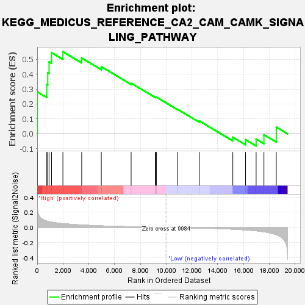
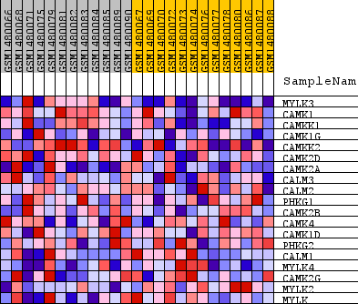
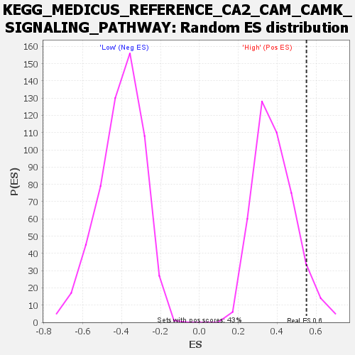

| Dataset | WG6v3.CPT1A.cls#High_versus_Low.CPT1A.cls#High_versus_Low_repos |
| Phenotype | CPT1A.cls#High_versus_Low_repos |
| Upregulated in class | High |
| GeneSet | KEGG_MEDICUS_REFERENCE_CA2_CAM_CAMK_SIGNALING_PATHWAY |
| Enrichment Score (ES) | 0.55064744 |
| Normalized Enrichment Score (NES) | 1.4169341 |
| Nominal p-value | 0.07175926 |
| FDR q-value | 1.0 |
| FWER p-Value | 1.0 |

| SYMBOL | TITLE | RANK IN GENE LIST | RANK METRIC SCORE | RUNNING ES | CORE ENRICHMENT | |
|---|---|---|---|---|---|---|
| 1 | MYLK3 | MYLK3 | 11 | 0.271 | 0.2812 | Yes |
| 2 | CAMK1 | CAMK1 | 744 | 0.084 | 0.3304 | Yes |
| 3 | CAMKK1 | CAMKK1 | 818 | 0.079 | 0.4093 | Yes |
| 4 | CAMK1G | CAMK1G | 918 | 0.075 | 0.4825 | Yes |
| 5 | CAMKK2 | CAMKK2 | 1110 | 0.069 | 0.5447 | Yes |
| 6 | CAMK2D | CAMK2D | 1993 | 0.049 | 0.5506 | Yes |
| 7 | CAMK2A | CAMK2A | 3448 | 0.031 | 0.5084 | No |
| 8 | CALM3 | CALM3 | 4972 | 0.019 | 0.4502 | No |
| 9 | CALM2 | CALM2 | 7285 | 0.008 | 0.3398 | No |
| 10 | PHKG1 | PHKG1 | 9161 | 0.003 | 0.2458 | No |
| 11 | CAMK2B | CAMK2B | 9210 | 0.002 | 0.2458 | No |
| 12 | CAMK4 | CAMK4 | 9244 | 0.002 | 0.2464 | No |
| 13 | CAMK1D | CAMK1D | 10886 | -0.003 | 0.1647 | No |
| 14 | PHKG2 | PHKG2 | 12570 | -0.008 | 0.0865 | No |
| 15 | CALM1 | CALM1 | 15172 | -0.024 | -0.0230 | No |
| 16 | MYLK4 | MYLK4 | 16160 | -0.033 | -0.0393 | No |
| 17 | CAMK2G | CAMK2G | 16981 | -0.045 | -0.0351 | No |
| 18 | MYLK2 | MYLK2 | 17586 | -0.058 | -0.0063 | No |
| 19 | MYLK | MYLK | 18544 | -0.097 | 0.0452 | No |

